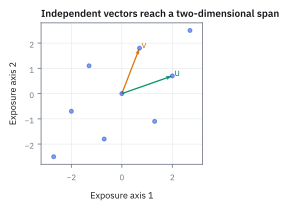
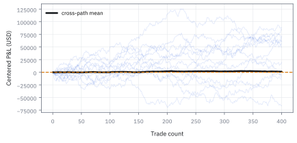
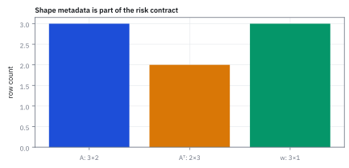

4.2 Building Martingales from a Random Walk
หักกำไรที่คาดไว้ล่วงหน้าออกจากกำไรสะสม ส่วนที่เหลือคือกำไรส่วนเกินซึ่งเป็น martingale แล้ววัดว่าส่วนเกินนั้นใหญ่กี่เท่าของการแกว่งตามปกติ
ธนาคารแห่งหนึ่งมีทีมเทรดเล็ก ๆ ที่คนในวงการเรียกว่า desk หัวหน้าฝ่ายต้องตัดสินว่าเทรดเดอร์ใน desk นี้เก่งขึ้นจริง หรือแค่ดวงดีช่วงนี้ เทรดเดอร์ซื้อขายหลายครั้งต่อวัน การเทรดหนึ่งครั้ง ตั้งแต่ซื้อจนขายปิด เรียกว่าหนึ่ง “ไม้” กำไรของแต่ละไม้ขึ้นลงแรงมาก บางไม้ได้หลายพัน บางไม้เสียหลายพัน
ก่อนเริ่มประเมิน หัวหน้าตั้ง “เส้นฐาน” ไว้จากข้อมูลย้อนหลังของ desk นี้ เส้นฐานคือกำไรที่ควรได้อยู่แล้วถ้าฝีมือเท่าเดิม ของที่รู้ (ตัวเลขสมมติทั้งหมด):
- กำไรสุทธิเฉลี่ยต่อไม้ตามเส้นฐาน $\mu=\$320$ (สุทธิคือหักค่าธรรมเนียมแล้ว)
- ความผันผวนต่อไม้ $\sigma=\$2{,}500$ คือ SD (standard deviation) ของกำไรหนึ่งไม้ บอกว่ากำไรแต่ละไม้มักห่างจาก \$320 ราวเท่าไร
- เทรดไปแล้ว $n=400$ ไม้ ได้กำไรรวมจริง $S_{400}=\$165{,}000$
ถ้าฝีมือเท่าเดิม 400 ไม้ควรได้ราว $400\times\$320=\$128{,}000$ ผลจริงจึงเกินเส้นฐานอยู่ $165{,}000-128{,}000=\$37{,}000$ หัวหน้าถามสองข้อ
- ส่วนเกิน \$37,000 เป็นหลักฐานว่าเทรดเดอร์เก่งขึ้นแล้วหรือยัง
- ถ้าเส้นฐานเดิมยังถูก ควรคาดกำไรรวมหลัง 800 ไม้ไว้เท่าไร
ลองตอบก่อนเปิดเฉลย
ข้อแรก ยังไม่ใช่หลักฐาน เพราะกำไร 400 ไม้รวมกันแกว่งได้กว้างมาก ขั้นที่ 5 จะพิสูจน์ว่า SD ของส่วนเกินสะสมคือ $\sigma\sqrt n$ ลองเทียบส่วนเกินกับ SD นี้ดู
ส่วนเกินจึงมีขนาดแค่ 0.74 เท่าของ SD ขั้นที่ 7 จะแสดงว่า ถึงเทรดเดอร์ไม่ได้เก่งขึ้นเลย ก็ยังมีโอกาสราว 23% ที่จะเห็นส่วนเกินขนาดนี้หรือมากกว่า
ข้อสอง คาดไว้ที่ \$293,000 คือกำไรที่มีแล้ว บวกกำไรที่คาดของ 400 ไม้ข้างหน้า
ส่วนเกิน \$37,000 ที่ได้มาแล้วยังอยู่ครบ มันไม่หายกลับเป็นศูนย์ และไม่โตเป็นสองเท่า ขั้นที่ 3 จะอธิบายว่าทำไม
ภาพรวมก่อนลงสูตร
เขียนกำไรของไม้ที่ $i$ ว่า $X_i$ กำไรสะสมหลัง $n$ ไม้ก็คือผลรวม $S_n=X_1+X_2+\cdots+X_n$ แต่ละ $X_i$ สุ่ม ผลรวมของก้าวสุ่มแบบนี้เรียกว่า random walk เพราะมันเดินขึ้นลงทีละก้าวแบบสุ่ม
หน้า filtration และ martingale นิยาม martingale ไว้ว่า เป็นกระบวนการที่ค่าเฉลี่ยของค่าถัดไป เมื่อรู้ทุกอย่างถึงวันนี้ เท่ากับค่าวันนี้พอดี มันคือแบบจำลองของเกมยุติธรรม กำไรสะสม $S_n$ ไม่ใช่ martingale เพราะทุกไม้คาดได้ล่วงหน้าว่าจะเพิ่มเฉลี่ย $\mu=\$320$
แต่ถ้าหักส่วนที่คาดได้ $n\mu$ ออก ส่วนที่เหลือคือกำไรส่วนเกิน $M_n=S_n-n\mu$ และส่วนเกินนี้เป็น martingale ขั้นที่ 2 จะพิสูจน์ให้ดู
ทำไมต้องหัก เพราะคำถามของหัวหน้าไม่ใช่ “กำไรเท่าไร” แต่คือ “กำไรเกินที่ควรได้อยู่แล้วเท่าไร และเกินมากพอจะไม่ใช่โชคหรือยัง” จะตอบข้อหลังได้ ต้องรู้ว่าส่วนเกินแกว่งตามปกติได้กว้างแค่ไหน หน้านี้จะพบว่าเส้นฐานโตตามจำนวนไม้ $n$ แต่ความกว้างของการแกว่งโตแค่ตาม $\sqrt n$
ลำดับของหน้านี้:
- ขั้นที่ 1–2 ลองหักเส้นฐานในเกมเล็ก ๆ แล้วพิสูจน์ว่าส่วนเกินเป็น martingale เสมอ
- ขั้นที่ 3 ใช้ martingale พยากรณ์กำไรรวมหลัง 800 ไม้
- ขั้นที่ 4 ทำแบบเดียวกันกับราคาหุ้นที่โตเป็นเปอร์เซ็นต์ ซึ่งต้องหารแทนลบ
- ขั้นที่ 5–7 หา variance (SD ยกกำลังสอง) ของส่วนเกิน แปลงส่วนเกินเป็น z-score คือนับว่าห่างจากศูนย์กี่ SD แล้วแปลงเป็นโอกาส
- ขั้นที่ 8 ถามว่าต้องเทรดกี่ไม้ ถึงจะแยกฝีมือออกจากโชคได้
รูปด้านล่างคือภาพรวมของทั้งหน้า เส้นประส้มคือเส้นฐาน แถบน้ำเงินคือช่วงที่กำไรสะสมแกว่งอยู่ตามปกติถ้าฝีมือเท่าเดิม และจุดเขียวคือผลจริงที่ 400 ไม้
รูป — เส้นฐานโตตาม n แต่แถบการแกว่งโตตาม √n
ศัพท์ที่ใช้ในหัวข้อนี้
- Desk และ ไม้
- desk คือทีมเทรดเล็ก ๆ ในธนาคารหรือกองทุน หนึ่ง “ไม้” คือการเทรดหนึ่งครั้ง ตั้งแต่ซื้อจนขายปิด กำไรสุทธิของไม้หนึ่งคือกำไรหลังหักค่าธรรมเนียม
- เส้นฐาน (baseline)
- กำไรที่ควรได้อยู่แล้วถ้าฝีมือเท่าเดิม ตั้งไว้ก่อนเริ่มประเมินจากข้อมูลย้อนหลัง หน้านี้ใช้ \$320 ต่อไม้ เส้นฐานหลัง $n$ ไม้จึงเป็น $320n$
- Random walk
- ผลรวมสะสมของก้าวสุ่ม $S_n=X_1+\cdots+X_n$ เช่นกำไรสะสม หรือยอดเงินในเกมพนัน แต่ละก้าวพาผลรวมขึ้นหรือลงแบบสุ่ม
- Martingale
- กระบวนการที่ค่าเฉลี่ยของค่าถัดไป เมื่อรู้ทุกอย่างถึงวันนี้ เท่ากับค่าวันนี้พอดี คือแบบจำลองของเกมยุติธรรม นิยามเต็มอยู่ใน filtration และ martingale
- Submartingale และ supermartingale
- ถ้าค่าเฉลี่ยของค่าถัดไปสูงกว่าค่าวันนี้ เรียก submartingale (มีแนวโน้มขึ้น) ถ้าต่ำกว่า เรียก supermartingale (มีแนวโน้มลง)
- Drift $\mu$
- ค่าเฉลี่ยของหนึ่งก้าวเมื่อรู้อดีตแล้ว คือส่วนที่คาดได้ล่วงหน้า หน้านี้ใช้ drift ตั้งเส้นฐาน $n\mu$
- IID
- ย่อจาก independent and identically distributed คือทุกก้าวสุ่มจากการแจกแจงเดียวกัน และแต่ละก้าวไม่เกี่ยวกัน
- Martingale difference
- ก้าวที่เฉลี่ยเป็นศูนย์เมื่อรู้อดีต เขียนว่า $\mathbb E_{i-1}[Y_i]=0$ ผลรวมของก้าวแบบนี้เป็น martingale โดยแต่ละก้าวไม่จำเป็นต้องอิสระกัน
- Variance และ SD
- variance คือค่าเฉลี่ยของระยะห่างจากค่าเฉลี่ยยกกำลังสอง SD คือรากที่สองของ variance จึงมีหน่วยเดียวกับข้อมูล (ดอลลาร์) ทบทวนได้ที่ variance
- Doob decomposition
- การแยกกระบวนการเป็นสองส่วน ส่วนที่คาดได้ล่วงหน้า (ผลรวมของ drift) บวก martingale ใช้แยก “กำไรที่ควรได้อยู่แล้ว” ออกจาก “กำไรที่เป็นข่าวใหม่”
- z-score
- ส่วนเกินหารด้วย SD ของส่วนเกิน ได้ตัวเลขไม่มีหน่วย บอกว่าส่วนเกินอยู่ห่างจากศูนย์กี่เท่าของการแกว่งตามปกติ
- Normal approximation
- การประมาณว่าผลรวมของก้าวสุ่มจำนวนมากมีรูปร่างเป็นรูประฆัง Normal ตาม central limit theorem ใช้แปลง z-score เป็นโอกาส แต่ใช้ได้เมื่อเงื่อนไขของทฤษฎีนั้นเป็นจริงเท่านั้น
สัญลักษณ์และหน่วย
| สัญลักษณ์ | ความหมาย | หน่วย |
|---|---|---|
| $X_i$ | กำไรสุทธิของไม้ที่ $i$ | ดอลลาร์ |
| $S_n$ | กำไรสะสมหลัง $n$ ไม้ เริ่ม $S_0=0$ | ดอลลาร์ |
| $\mu$ | กำไรเฉลี่ยต่อไม้ตามเส้นฐาน | ดอลลาร์ต่อไม้ |
| $Y_i=X_i-\mu$ | กำไรส่วนเกินของไม้ที่ $i$ | ดอลลาร์ |
| $M_n=S_n-n\mu$ | กำไรส่วนเกินสะสม | ดอลลาร์ |
| $\sigma$ | ความผันผวนต่อไม้ (SD ของกำไรหนึ่งไม้) | ดอลลาร์ |
| $\mathcal F_n$ | ข้อมูลทั้งหมดที่รู้หลังไม้ที่ $n$ คือผลของไม้ที่ 1 ถึง $n$ | — |
| $\mathbb E_n[\,\cdot\,]$ | ค่าเฉลี่ยเมื่อรู้ข้อมูล $\mathcal F_n$ แล้ว | ตามสิ่งที่เฉลี่ย |
| $z$ | ส่วนเกินหารด้วย SD ของส่วนเกิน | ไม่มีหน่วย |
| $\Phi(z)$ | พื้นที่ใต้รูประฆัง Normal มาตรฐานทางซ้ายของ $z$ คือโอกาสที่ค่าจะไม่เกิน $z$ | ไม่มีหน่วย |
ขั้นที่ 1 — ลองหักเส้นฐานในเกมเล็ก ๆ
ก่อนพิสูจน์ในกรณีทั่วไป ลองเกมเล็กที่นับได้ด้วยมือก่อน จะได้เห็นกับตาว่าการหักเส้นฐานเปลี่ยนอะไร
โจทย์ให้อะไรมาบ้าง: (เกมสมมติ)
- แต่ละไม้ได้ \$3 หรือเสีย \$1 โอกาสอย่างละครึ่ง
- แต่ละไม้ไม่เกี่ยวกัน ผลของไม้ก่อนไม่เปลี่ยนโอกาสของไม้ถัดไป
- เริ่มที่กำไรสะสม $S_0=0$
- $\mathbb E_n[\,\cdot\,]$ คือค่าเฉลี่ยเมื่อรู้ผลของไม้ที่ 1 ถึง $n$ แล้ว ข้อมูลชุดนี้เขียนว่า $\mathcal F_n$
เริ่มจากเส้นฐาน คือกำไรเฉลี่ยของหนึ่งไม้
สมมติไม้แรกได้ \$3 ตอนนี้ $S_1=3$ ไม้ที่สองพากำไรไปที่ $3+3=6$ หรือ $3-1=2$ อย่างละครึ่ง ค่าเฉลี่ยของ $S_2$ เมื่อรู้ผลไม้แรกแล้วจึงเป็น
ทีนี้หักเส้นฐานไม้ละ \$1 ออก ได้กำไรส่วนเกิน $M_n=S_n-n$ ตอนนี้ $M_1=3-1=2$ หลังไม้ที่สอง $M_2$ เป็น $6-2=4$ หรือ $2-2=0$ อย่างละครึ่ง
คำตอบ: กำไรดิบ $S_n$ คาดได้ว่าจะโตไม้ละ \$1 เสมอ ค่าเฉลี่ยของค่าถัดไปจึงสูงกว่าค่าวันนี้ มันไม่ใช่ martingale แต่เป็น submartingale คือมีแนวโน้มขึ้น ส่วนกำไรส่วนเกิน $M_n$ ไม่มีแนวโน้มแล้ว ยืนอยู่ที่ $M_1=2$ ค่าเฉลี่ยหลังไม้ถัดไปก็คือ 2 พอดี
ตรวจเองใน 10 วินาที: หลังหัก \$1 ทุกไม้ แต่ละไม้เหลือ $3-1=+2$ หรือ $-1-1=-2$ อย่างละครึ่ง ซึ่งเฉลี่ยเป็นศูนย์ ผลรวมของก้าวที่เฉลี่ยศูนย์จึงไม่มีแนวโน้มขึ้นหรือลง ให้สังเกตว่าการหักเส้นฐานไม่ได้ทำให้ความเสี่ยงลดลง มันแค่เปลี่ยนสิ่งที่วัด จากกำไรทั้งหมด เป็นกำไรที่เกินความคาดหมาย
รูป — ต้นไม้เดียวกัน ก่อนและหลังหักเส้นฐาน
ขั้นที่ 2 — พิสูจน์ทั่วไป: ทำไม $S_n-n\mu$ เป็น martingale
เกมเล็กให้ผลถูก แต่นั่นเป็นแค่ตัวอย่างเดียว ขั้นนี้แสดงว่าการหักเส้นฐานใช้ได้กับ random walk ทุกตัว ซึ่งรวมถึงกำไรของ desk ด้วย
ของที่สมมติ:
- กำไรรายไม้ $X_1,X_2,\ldots$ เป็น IID คือทุกไม้สุ่มจากการแจกแจงเดียวกัน และแต่ละไม้ไม่เกี่ยวกัน
- ทุกไม้มีค่าเฉลี่ย $\mu$ และ $\mathbb E|X_i|$ มีค่าจำกัด คือขนาดเฉลี่ยของกำไรไม่เป็นอนันต์ ซึ่งเป็นเงื่อนไขขั้นต่ำที่ทำให้ค่าเฉลี่ยมีความหมาย
- กำไรสะสม $S_n=\sum_{i=1}^nX_i$ และกำไรส่วนเกิน $M_n=S_n-n\mu$
เงื่อนไข martingale ถามว่า ถ้ายืนอยู่ที่ไม้ที่ $n$ แล้วมองไปข้างหน้า $m$ ไม้ ค่าเฉลี่ยของ $M_{n+m}$ เท่ากับ $M_n$ หรือไม่ เราคำนวณตรง ๆ
ท่าหลักคือแบ่งผลรวมเป็นสองกอง กองอดีต $X_1,\ldots,X_n$ กับกองอนาคต $X_{n+1},\ldots,X_{n+m}$ ณ ไม้ที่ $n$ กองอดีตเกิดขึ้นแล้ว และค่าเฉลี่ยของสิ่งที่รู้แล้วก็คือตัวมันเอง กองอดีตจึงหลุดออกมาเป็นตัวเลข $S_n$ ส่วน $(n+m)\mu$ เป็นค่าคงที่ จึงดึงออกนอกค่าเฉลี่ยได้ตั้งแต่แรก
จุดที่ต้องคิดคือกองอนาคต ทำไมแต่ละไม้ในกองนี้ยังเฉลี่ย $\mu$ ทั้งที่เรารู้อดีตแล้ว เพราะแต่ละไม้ไม่ขึ้นกับอดีต การรู้อดีตจึงไม่เปลี่ยนค่าเฉลี่ยของมัน $m$ ไม้รวมกันได้ $m\mu$ แล้ว $m\mu$ ก็หักกับ $(n+m)\mu$ เหลือ $S_n-n\mu$ ซึ่งก็คือ $M_n$ พอดี
ผลพลอยได้: กำไรดิบมี $\mathbb E_n[S_{n+1}]=S_n+\mu$ ถ้า $\mu\gt0$ มันมีแนวโน้มขึ้น (submartingale) ถ้า $\mu\lt0$ มันมีแนวโน้มลง (supermartingale) และเป็น martingale เฉพาะเมื่อ $\mu=0$ แต่ $M_n$ เป็น martingale ทั้งสามกรณี
สมมติฐาน IID แรงเกินจำเป็น สิ่งที่ใช้จริงมีข้อเดียว คือ $\mathbb E_{i-1}[X_i]=\mu$ แปลว่าก่อนเห็นผลไม้ที่ $i$ ค่าเฉลี่ยของมันคือ $\mu$ ไม่ว่าอดีตเป็นอย่างไร ความผันผวนเปลี่ยนตามอดีตได้ และแต่ละไม้เกี่ยวพันกันได้
ถ้าค่าเฉลี่ยของแต่ละไม้ไม่เท่ากัน ให้เขียน $\mu_i=\mathbb E_{i-1}[X_i]$ ซึ่งต้องคำนวณได้ก่อนเห็นผลไม้นั้น แล้วหัก $\sum_{i=1}^n\mu_i$ แทน $n\mu$ การแยก $S_n=\sum_{i=1}^n\mu_i+M_n$ แบบนี้ชื่อ Doob decomposition คือส่วนที่คาดได้ล่วงหน้า บวกส่วนที่เป็นข่าวใหม่ล้วน ๆ
รูป — กำไรสะสมจริงกับเส้นฐาน

ขั้นที่ 3 — กลับไปที่ desk: พยากรณ์จากข้อมูลวันนี้
ตอนนี้ตอบคำถามที่สองของหัวหน้าได้แล้ว martingale ให้คำพยากรณ์มาฟรี ๆ คือ ค่าเฉลี่ยของส่วนเกินในอนาคต เท่ากับส่วนเกินวันนี้
โจทย์ให้อะไรมาบ้าง:
- เส้นฐาน $\mu=\$320$ ต่อไม้ ตั้งไว้ก่อนเริ่มประเมิน และถือว่ายังถูกต่อไป
- ณ ไม้ที่ 400 รู้กำไรสะสม $S_{400}=\$165{,}000$
- อยากรู้ค่าเฉลี่ยของกำไรสะสมหลัง 800 ไม้ เมื่อรู้ข้อมูลถึงวันนี้ คือ $\mathbb E_{400}[S_{800}]$
ทำได้สองวิธี วิธีแรก เอากำไรที่มีแล้วบวกกำไรที่คาดของ 400 ไม้ข้างหน้า
วิธีที่สอง ใช้ martingale ตรง ๆ ส่วนเกินวันนี้คือ $M_{400}=165{,}000-128{,}000=37{,}000$ และค่าเฉลี่ยของส่วนเกินหลัง 800 ไม้ก็คือส่วนเกินวันนี้ $\mathbb E_{400}[M_{800}]=M_{400}$ จากนั้นบวกเส้นฐานของ 800 ไม้กลับเข้าไป
คำตอบ: คาดกำไรรวมหลัง 800 ไม้ไว้ที่ \$293,000 สองวิธีต้องได้ค่าเดียวกัน เพราะ $S_{800}=M_{800}+800\mu$ เป็นแค่การเขียนสิ่งเดียวกันสองแบบ
ตรวจเองใน 10 วินาที: คำตอบผิดที่พบบ่อยมีสองแบบ แบบแรกตอบ $800\times320=\$256{,}000$ คือคิดจากวันเริ่มต้น แล้วทิ้งส่วนเกิน \$37,000 ที่เกิดขึ้นจริงไปแล้ว แบบที่สองตอบ $2\times165{,}000=\$330{,}000$ คือแอบสมมติว่าส่วนเกินจะเกิดซ้ำอีกรอบ ซึ่งเท่ากับบอกว่ากำไรเฉลี่ยต่อไม้ไม่ใช่ \$320 แล้ว ขัดกับโจทย์
รูป — ส่วนเกินหลายเส้นทาง: ค่าเฉลี่ยราบ แต่การกระจายบานออก

ขั้นที่ 4 — ถ้าการโตเป็นแบบคูณ ให้หารแทนลบ
กำไรของ desk โตแบบบวก คือแต่ละไม้เพิ่มเฉลี่ย \$320 เท่ากันเสมอ แต่ราคาหุ้นไม่ได้โตแบบนั้น ราคาหุ้นโตเป็นเปอร์เซ็นต์ หุ้นราคา \$200 ที่ขึ้น 2% ได้ $0.02\times200=\$4$ ส่วนหุ้นราคา \$100 ที่ขึ้น 2% ได้แค่ $0.02\times100=\$2$ ส่วนที่คาดว่าจะโตจึงไม่ใช่ค่าคงที่ที่ลบออกได้ ต้องใช้ท่าใหม่ คือหารแทนลบ
โจทย์ให้อะไรมาบ้าง: (ตัวเลขสมมติ ขั้นนี้ใช้ $S_n$ แทนราคาหุ้นหลัง $n$ งวด)
- ราคาเริ่ม $S_0=\$100$
- แต่ละงวด ราคาคูณด้วยตัวคูณสุ่ม $G$ คือ 1.1 (ขึ้น 10%) ด้วยโอกาส 0.6 หรือ 0.9 (ลง 10%) ด้วยโอกาส 0.4
- ตัวคูณแต่ละงวดไม่เกี่ยวกัน ค่าเฉลี่ยของตัวคูณเขียนว่า $g$
เริ่มจากหาค่าเฉลี่ยของตัวคูณ $g$ แล้วดูว่าราคาที่หารด้วย $g$ ยกกำลังจำนวนงวด ทำตัวอย่างไร
ราคาวันนี้ $S_n$ รู้แล้ว จึงดึงออกนอกค่าเฉลี่ยได้ เหลือแค่ค่าเฉลี่ยของตัวคูณ ซึ่งคือ 1.02 ราคาจึงคาดว่าจะโต 2% ต่องวด ไม่ว่าวันนี้จะอยู่ที่เท่าไร ส่วนที่คาดว่าจะโตเป็นดอลลาร์คือ $0.02\,S_n$ ซึ่งขึ้นกับราคาวันนี้ การลบค่าคงที่จึงลบมันไม่หมด
ท่าแก้คือหารด้วย $1.02^{n+1}$ ทำไมหารเข้าไปในค่าเฉลี่ยได้ เพราะ $1.02^{n+1}$ เป็นตัวเลขคงที่ ไม่สุ่ม แล้ว 1.02 ที่ได้จากตัวคูณก็หักกับ 1.02 หนึ่งตัวใน $1.02^{n+1}$ เหลือ $S_n/1.02^n$ พอดี สรุปว่า $S_n/1.02^n$ เป็น martingale ลองเช็กกับงวดแรก: $\mathbb E[S_1]=1.02\times100=102$ และ $102/1.02=100=S_0$
แนวคิดเดียวกับการลบเส้นฐาน แค่เปลี่ยนจาก “บวกเพิ่มคงที่ จึงลบออก” เป็น “คูณเพิ่มคงที่ จึงหารออก”
ท่าหารนี้คือการคิดลด (discount) ที่ใช้ตั้งราคา option ตอนตั้งราคา เราใช้ชุดโอกาสพิเศษที่เรียกว่า risk-neutral probability ซึ่งเลือกให้ตัวคูณเฉลี่ยของหุ้นเท่ากับตัวคูณของเงินฝาก $R$ พอดี เช่นดอกเบี้ย 1% ต่องวดคือ $R=1.01$ ราคาที่หารด้วย $R^n$ จึงเป็น martingale ตามที่เห็นใน filtration และ martingale
ในเวลาต่อเนื่องก็เหมือนกัน แบบจำลองราคาหุ้นที่ใช้กันมากคือ GBM ที่มี drift μ (μ ตรงนี้คืออัตราโตต่อปี ไม่ใช่ \$320 ของ desk) มันมี $\mathbb E_t[S_{t+s}]=e^{\mu s}S_t$ ดังนั้น $e^{-\mu t}S_t$ จึงเป็น martingale ด้วยเหตุผลเดียวกัน
ขั้นที่ 5 — Variance ของส่วนเกิน: บวกกันได้เพราะไม่มีพจน์ไขว้
คำพยากรณ์ \$293,000 บอกแค่จุดกลาง ยังไม่บอกว่าผลจริงจะแกว่งห่างจากจุดนั้นได้แค่ไหน การตัดสินว่าส่วนเกิน \$37,000 “ใหญ่” หรือไม่ ก็ต้องรู้ความกว้างนี้เหมือนกัน ขั้นนี้จึงหา variance ของส่วนเกิน $M_n$
ให้ $Y_i=X_i-\mu$ คือกำไรส่วนเกินของไม้ที่ $i$ ดังนั้น $M_n=Y_1+\cdots+Y_n$ และเพิ่มสมมติฐานอีกข้อ: ทุกไม้มี $\mathbb E[Y_i^2]=\sigma^2$ เท่ากันและมีค่าจำกัด คือ variance ของกำไรต่อไม้เป็น $\sigma^2$ สำหรับ desk คือ $\sigma=\$2{,}500$
$M_n$ เริ่มที่ศูนย์และเป็น martingale ค่าเฉลี่ยของมันจึงเป็นศูนย์ variance จึงเท่ากับค่าเฉลี่ยของ $M_n^2$ เรากระจายกำลังสองของผลรวมออกมา
พจน์ $\mathbb E[Y_iY_j]$ ที่ $i\lt j$ เรียกว่าพจน์ไขว้ (cross term) มันวัดว่าไม้สองไม้ขึ้นลงไปด้วยกันแค่ไหน ถ้าไม้ต่าง ๆ เกี่ยวพันกัน พจน์ไขว้ปกติไม่เป็นศูนย์ แต่ที่นี่มันเป็นศูนย์ทุกคู่
พจน์ไขว้หายหมด จึงเหลือแค่ผลรวมของ variance รายไม้
จังหวะที่ต้องคิดคือพจน์ไขว้ เราเฉลี่ย $Y_iY_j$ เป็นสองชั้น ชั้นในยืนอยู่หลังไม้ที่ $j-1$ ตอนนั้นไม้ที่ $i$ จบไปแล้ว เพราะ $i\lt j$ ดังนั้น $Y_i$ เป็นตัวเลขที่รู้แล้ว ดึงออกนอกค่าเฉลี่ยชั้นในได้ สิ่งที่เหลือข้างในคือ $\mathbb E_{j-1}[Y_j]$ ซึ่งเป็นศูนย์ตามนิยามของ martingale difference ชั้นนอกจึงเฉลี่ยศูนย์ได้ศูนย์ ให้สังเกตว่าเราไม่ได้ใช้ว่าแต่ละไม้อิสระกันเลย
เมื่อพจน์ไขว้หายหมด variance ของผลรวมก็คือผลบวกของ variance รายไม้ตรง ๆ (การกระจายกำลังสองของผลรวมทบทวนได้ที่ variance) ได้ $n\sigma^2$ หน่วยดอลลาร์ยกกำลังสอง ถอดรากได้ SD ซึ่งโตตาม $\sqrt n$ ไม่ใช่ $n$ พูดแบบคนคือ ไม้ที่ได้กับไม้ที่เสียหักล้างกันบางส่วน ผลรวมจึงไม่บานเร็วเท่าจำนวนไม้ นี่คือเหตุผลที่แถบในรูปภาพรวมบานช้ากว่าเส้นฐาน
ผลเดียวกันเขียนเป็น martingale อีกตัวได้ สมมติว่า variance ของไม้ถัดไปเมื่อรู้อดีตคงที่ $\mathbb E_n[Y_{n+1}^2]=\sigma^2$ แล้วกระจาย $M_{n+1}^2=(M_n+Y_{n+1})^2$
กำลังสองของส่วนเกินจึงโตเฉลี่ยไม้ละ $\sigma^2$ พอดี หักออกแล้วไม่มีแนวโน้ม แปลว่า $M_n^2-n\sigma^2$ ก็เป็น martingale ในเวลาต่อเนื่อง คู่ของมันคือ $W_t^2-t$ โดย $W_t$ คือ Brownian motion (random walk ที่ก้าวเล็กลงจนเดินต่อเนื่อง) ผลนี้เป็นแก่นของ quadratic variation
รูป — หนึ่งไม้กับสองไม้: variance เป็นสองเท่า แต่ SD เป็น √2 เท่า
ขั้นที่ 6 — แปลงดอลลาร์เป็น z-score
ขั้นที่ 5 ให้หน่วยวัดที่ถูกต้องสำหรับส่วนเกินแล้ว คือ SD ของส่วนเกิน $\sigma\sqrt n$ ทีนี้ใส่ตัวเลขของ desk คือ $\sigma=\$2{,}500$ ต่อไม้ และ $n=400$ ไม้ แล้วหารส่วนเกินด้วย SD นี้ ผลหารเรียกว่า z-score บอกว่าส่วนเกินอยู่ห่างจากศูนย์กี่ SD
variance มีหน่วยดอลลาร์ยกกำลังสอง ตัวเลข $2.5\times10^9$ จึงเอาไปเทียบกับส่วนเกิน \$37,000 ตรง ๆ ไม่ได้ ต้องถอดรากกลับเป็นดอลลาร์ก่อน $\sqrt{2.5\times10^9}=50{,}000$ ซึ่งตรงกับ $2{,}500\times20$ ผลคือ $z=0.74$ ส่วนเกินอยู่ห่างจากศูนย์ไม่ถึงหนึ่ง SD ของการแกว่งตามปกติ
แต่ z ยังไม่ใช่โอกาส จะแปลง z เป็นโอกาสได้ ต้องรู้รูปร่างของการแจกแจงด้วย ซึ่งเป็นสมมติฐานชั้นที่สาม สรุปสามชั้นได้ดังนี้ martingale บอกแค่ว่า “ไม่มี drift” คือจุดกลางอยู่ที่ไหน สมมติฐานเรื่อง second moment ($\mathbb E[Y_i^2]=\sigma^2$ คือค่าเฉลี่ยของกำลังสอง) บอกว่า “กว้างแค่ไหน” ส่วน “รูปร่างเป็นระฆัง” ต้องมาจากที่อื่น ขั้นถัดไปจะหามาให้
ขั้นที่ 7 — ใช้ normal approximation อย่างรู้เงื่อนไข
หัวหน้าอยากได้คำตอบเป็นโอกาส ไม่ใช่ระยะ 0.74 SD ขั้นนี้จึงต้องหารูปร่างของการแจกแจงมาใส่ ข่าวดีคือผลรวมของไม้จำนวนมากมักมีรูปร่างใกล้ระฆัง Normal แต่ต้องมีเงื่อนไขรองรับ
- ถ้ากำไรแต่ละไม้เป็น IID และมี variance จำกัด central limit theorem (CLT) บอกว่าผลรวม 400 ไม้ใกล้ Normal
- ถ้าแต่ละไม้เกี่ยวพันกัน (เป็นแค่ martingale difference) ต้องใช้ martingale CLT ซึ่งต้องการเงื่อนไขเพิ่ม เช่น ไม่มีไม้ใดใหญ่จนครอบงำผลรวม และผลรวมของ variance เมื่อรู้อดีตต้องนิ่ง ไม่แกว่งไปมา
เมื่อเงื่อนไขครบ ส่วนเกินหารด้วย SD ของมันจะใกล้ $N(0,1)$ คือ Normal ที่มีค่าเฉลี่ย 0 และ SD 1 ส่วน $\Phi(z)$ คือพื้นที่ใต้ระฆังนี้ทางซ้ายของ $z$ ซึ่งอ่านจากตารางหรือให้คอมพิวเตอร์คำนวณ โอกาสที่จะเกิน $z$ จึงเป็น $1-\Phi(z)$
ความหมายคือ ถ้าเส้นฐาน \$320 ถูก และเทรดเดอร์ไม่ได้เก่งขึ้นเลย ก็ยังมีโอกาสราว 23% ที่จะเห็นส่วนเกินอย่างน้อย \$37,000 เกือบหนึ่งในสี่ ถ้าสนใจทั้งสองทาง คือเกินหรือขาดเส้นฐานมากพอ ๆ กัน โอกาสเป็น $2\times0.2296\approx0.46$ หรือราว 46% ตัวเลขแบบนี้คือ p-value ใน hypothesis testing: โอกาสที่จะเห็นผลอย่างน้อยเท่านี้ ถ้าความจริงไม่มีอะไรเปลี่ยน
ระวังการพูด ประโยคที่ถูกคือ “ถ้าไม่มีฝีมือเพิ่ม โอกาสเห็นผลแบบนี้คือ 23%” ไม่ใช่ “โอกาส 23% ที่เทรดเดอร์ไม่มีฝีมือ” สองประโยคนี้ต่างกันแบบเดียวกับที่ Bayes' theorem แยก $P(A\mid B)$ ออกจาก $P(B\mid A)$ ประโยคแรกเริ่มจากสมมติฐานแล้วถามถึงข้อมูล ประโยคหลังเริ่มจากข้อมูลแล้วถามถึงสมมติฐาน
รูป — 0.74 SD ยังไม่ใช่หางที่หายาก

ขั้นที่ 8 — ต้องเทรดกี่ไม้ถึงจะแยกฝีมือออกจากโชค
คราวนี้มองกลับด้าน สมมติว่าเทรดเดอร์เก่งขึ้นจริง และส่วนเกินที่เห็นคือฝีมือที่จะอยู่ต่อไป ถามว่าต้องเทรดอีกนานแค่ไหน ส่วนเกินที่สะสมจึงจะใหญ่พอให้หัวหน้าเชื่อว่าไม่ใช่โชค
โจทย์ให้อะไรมาบ้าง:
- ส่วนเกินต่อไม้ที่เห็น $37{,}000/400=\$92.50$ ถ้ามันอยู่ต่อไป ส่วนเกินที่คาดหลัง $n$ ไม้คือ $92.5\,n$ ซึ่งโตตาม $n$
- ความผันผวนต่อไม้ $\sigma=\$2{,}500$ SD ของส่วนเกินหลัง $n$ ไม้จึงเป็น $2{,}500\sqrt n$ ซึ่งโตแค่ตาม $\sqrt n$
- เกณฑ์ตัดสินคือ 1.96 SD เพราะโชคอย่างเดียวพาส่วนเกินขึ้นไปเกินเส้นนี้ได้แค่ $1-\Phi(1.96)\approx2.5\%$ ของเวลา หรือ 5% ถ้านับทั้งขาขึ้นและขาลง
เราหา $n$ ที่ทำให้ส่วนเกินที่คาดแซงเกณฑ์
วิธีแก้อสมการคือหารสองข้างด้วย $\sqrt n$ ซึ่งเป็นบวกเสมอ เครื่องหมาย $\ge$ จึงไม่กลับด้าน แล้วยกกำลังสองทั้งสองข้าง ซึ่งทำได้เพราะทั้งสองข้างเป็นบวก สุดท้ายปัดขึ้น เพราะจำนวนไม้ต้องเป็นจำนวนเต็ม
คำตอบ: ประมาณ 2,807 ไม้ คือราว $2{,}807/400\approx7$ เท่าของข้อมูลที่มีตอนนี้
อย่าอ่านตัวเลขนี้เกินจริง มีสามเรื่องที่ต้องระวัง
- 2,807 คือจุดที่ส่วนเกินที่คาดแตะเกณฑ์พอดี ไม่ได้รับประกันว่าผลจริงจะผ่าน ถ้าส่วนเกินจริงเป็น \$92.50 พอดี ที่ 2,807 ไม้ ผลจริงมีโอกาสอยู่เหนือหรือใต้เกณฑ์พอ ๆ กัน โอกาสผ่านจึงมีแค่ราวครึ่งเดียว
- การวางแผนจำนวนข้อมูลจริง ๆ จะกำหนด power ไว้ก่อน power คือโอกาสที่การทดสอบจะจับฝีมือได้ ถ้าฝีมือมีจริง ถ้าอยากได้ power สูงกว่าครึ่ง ก็ต้องใช้ไม้มากกว่า 2,807
- ถ้าส่วนเกินจริงคือ \$92.50 ต่อไม้ แปลว่าเส้นฐาน \$320 ไม่ใช่ค่าเฉลี่ยจริงแล้ว ส่วนเกินที่หักด้วยเส้นฐานเดิมจึงไม่ใช่ martingale อีกต่อไป มันมี drift \$92.50 ต่อไม้ ซึ่งก็คือฝีมือที่เรากำลังตามหา
ตรวจเองใน 10 วินาที: ที่ 2,807 ไม้ ส่วนเกินที่คาดคือ $92.5\times2{,}807\approx259{,}650$ และเกณฑ์คือ $4{,}900\times\sqrt{2{,}807}\approx259{,}610$ สองค่าเกือบเท่ากันพอดี
รูป — เส้นตรงของสัญญาณแซงเส้นโค้งของ noise ช้ามาก

ความผิดที่ให้คำตอบผิดแบบเงียบ ๆ
สร้างเส้นฐานจากข้อมูลชุดที่กำลังตัดสิน: ถ้าเอาค่าเฉลี่ยของ 400 ไม้นี้เองมาเป็นเส้นฐาน ส่วนเกินจะเป็นศูนย์ทุกครั้ง ไม่ว่าเทรดเดอร์จะเก่งแค่ไหน ลองดู เส้นฐานแบบนี้คือ $\widehat\mu=165{,}000/400=\$412.50$ แล้วส่วนเกินคือ
ได้ศูนย์เพราะนิยามของค่าเฉลี่ยบังคับให้เป็นแบบนั้น ไม่ได้พิสูจน์อะไรเลย และยังผิดอีกชั้น เพราะค่าเฉลี่ยของทั้งชุดใช้ผลของไม้ที่ยังไม่เกิด ณ จุดก่อนหน้า คือแอบใช้ข้อมูลอนาคต ส่วนเกินที่ได้จึงไม่ adapted (ค่า ณ เวลาใดต้องคำนวณได้จากข้อมูลถึงเวลานั้นเท่านั้น) เส้นฐานที่ถูกต้องต้องมาจากช่วงก่อนหน้า หรือจากแบบจำลองที่ตั้งไว้ก่อนเริ่มประเมิน แบบ \$320 ในหน้านี้ ซึ่งให้ส่วนเกิน \$37,000
บวก SD แทนบวก variance: SD ของผลรวมไม่ใช่ผลรวมของ SD ถ้าบวก SD 400 ไม้ตรง ๆ จะได้ $400\times2{,}500=1{,}000{,}000$ แล้ว $z=37{,}000/1{,}000{,}000=0.037$ ซึ่งชวนให้สรุปว่าไม่มีอะไรเลย นี่ประเมิน noise สูงไป $1{,}000{,}000/50{,}000=20$ เท่า อีกทางหนึ่ง ถ้าลืม $\sqrt{400}$ ไปเลยแล้วใช้ SD ของไม้เดียว จะได้ $z=37{,}000/2{,}500=14.8$ แล้วสรุปว่าเก่งมาก ทั้งสองทางผิด SD ที่ถูกคือ $2{,}500\times\sqrt{400}=50{,}000$ ซึ่งให้ $z=0.74$
เฝ้าดูทุกไม้แล้วหยุดทันทีที่ผ่าน: ถ้าคำนวณ z ใหม่หลังทุกไม้ แล้วประกาศว่าเก่งทันทีที่ $z\ge1.96$ desk ที่ไม่มีฝีมือก็จะ “ผ่าน” บ่อยเกินจริง ถ้าดูครั้งเดียวตอนจบ โอกาสผ่านด้วยโชคคือ $1-\Phi(1.96)\approx2.5\%$ แต่ถ้าดูทุกไม้ตลอด 400 ไม้ ก็เท่ากับให้ z มีจังหวะแกว่งขึ้นไปแตะ 1.96 ถึง 400 ครั้ง โอกาสที่จะแตะสักครั้งจึงสูงกว่า 2.5% มาก การเลือกเวลาหยุดจากข้อมูลเปลี่ยนโจทย์ไปแล้ว เรื่องนี้เหมือนการลองหลายกลยุทธ์แล้วรายงานเฉพาะตัวที่ดีที่สุดใน multiple testing ส่วนการเลือกเวลาหยุดในเกมยุติธรรมเป็นหัวข้อของ ระบบเดิมพัน martingale
ใช้ Normal กับผลที่ขยับเป็นขั้นใหญ่: ถ้าผลรวมเกิดได้แค่บางค่า Normal จะให้โอกาสคลาดไปมาก ตัวอย่าง เกม $+3/-1$ จากขั้นที่ 1 เล่น 100 ไม้ ชนะ 58 ไม้ แพ้ $100-58=42$ ไม้ เส้นฐานไม้ละ \$1 และหลังหักเส้นฐานแต่ละไม้เป็น $\pm2$ จึงมี $\sigma=2$
Normal ให้หางขวา $1-\Phi(1.6)\approx5.48\%$ แต่ถ้านับตรง ๆ ด้วย binomial คือรวมโอกาสที่จะชนะตั้งแต่ 58 จาก 100 ไม้ $P(W\ge58)=\sum_{w=58}^{100}\binom{100}{w}2^{-100}\approx6.66\%$ ค่าจริงสูงกว่าค่าของ Normal ราว $0.0666/0.0548\approx1.22$ เท่า สาเหตุคือกำไรขยับเป็นขั้น ชนะเพิ่มหนึ่งไม้แทนที่จะแพ้ ทำให้กำไรเปลี่ยน $3-(-1)=4$ ดอลลาร์ ผลรวมจึงกระโดดทีละ \$4 ไม่ต่อเนื่องอย่างที่ Normal สมมติ
ใช้ทำอะไรบนโต๊ะจริง
การหักส่วนที่คาดได้ออกก่อนตัดสิน คือหัวใจของการประเมินผลงานทุกแบบในโลกการเงิน ตัวอย่างที่เจอบ่อยมีสามแบบ
- กองทุนวัดผลงานด้วยผลตอบแทนที่เกินดัชนีอ้างอิง เช่นเกิน S&P 500 ไม่ใช่ผลตอบแทนทั้งหมด
- desk พันธบัตรวัดกำไรที่เกิน carry ที่คาดไว้ (carry คือกำไรที่ได้จากการถือไว้เฉย ๆ เช่นดอกเบี้ยรับ)
- ทีมความเสี่ยงหักกำไรขาดทุน (PnL) ส่วนที่อธิบายได้ด้วย factor คือแรงร่วมของตลาด เช่นทั้งตลาดขึ้น แล้วดูส่วนที่เหลือ ตามที่อธิบายใน factor PnL และ idiosyncratic PnL
ทั้งสามแบบคือ $M_n$ ในหน้านี้ และคำถามต่อไปก็เหมือนกันทุกครั้ง: ส่วนเกินนี้ห่างจากศูนย์กี่ SD และเพราะ SD โตตาม $\sqrt n$ ช้ากว่าสัญญาณที่โตตาม $n$ desk ส่วนใหญ่จึงต้องมีข้อมูลหลายปี กว่าจะแยกฝีมือออกจากโชคได้
โจทย์ตรวจความเข้าใจ
1. กลับไปที่เกม $+3/-1$ จากขั้นที่ 1 แต่ละไม้ได้ \$3 หรือเสีย \$1 อย่างละครึ่ง ผู้เล่นคนหนึ่งเล่นไป 100 ไม้ ได้กำไรรวม \$132 เขาอยากรู้ว่ากำไรนี้ดีกว่าที่ควรได้มากแค่ไหน จงหาเส้นฐาน ส่วนเกิน SD ของส่วนเกิน และ z-score แล้วบอกว่าจะแปลง z เป็นโอกาสอย่างไร
เฉลย
เส้นฐานต่อไม้คือกำไรเฉลี่ยของหนึ่งไม้ หลังหักเส้นฐาน แต่ละไม้เหลือ $3-1=2$ หรือ $-1-1=-2$ อย่างละครึ่ง จึงมี $\sigma=2$
การแปลง $z=1.6$ เป็นโอกาส ทางที่ถูกคือนับ binomial ตรง ๆ ได้ราว 6.66% ถ้าใช้ Normal จะได้ $1-\Phi(1.6)\approx5.48\%$ ซึ่งต่ำไป เพราะกำไรของเกมนี้ขยับทีละ \$4 (ดูหัวข้อความผิดที่ให้คำตอบผิดแบบเงียบ ๆ ด้านบน)
2. สมมติรู้เรื่องกำไรของ desk แค่สองข้อ ข้อแรก ก่อนแต่ละไม้ ค่าเฉลี่ยของกำไรไม้นั้นคือ \$320 เสมอ ไม่ว่าอดีตเป็นอย่างไร เขียนว่า $\mathbb E_{i-1}[X_i]=320$ ข้อสอง กำไรแต่ละไม้มีขนาดเฉลี่ยจำกัด คือ $\mathbb E|X_i|$ ไม่เป็นอนันต์ ไม่รู้อะไรเรื่องความผันผวนหรือรูปร่างเลย สรุปข้อใดได้บ้าง (ก) $M_n=S_n-320n$ เป็น martingale (ข) variance ของ $M_n$ คือ $n\times2{,}500^2$ (ค) $M_n$ มีรูปร่างใกล้ Normal
เฉลย
(ก) ได้ เพราะเงื่อนไข martingale ใช้แค่ค่าเฉลี่ยเมื่อรู้อดีต กับขนาดเฉลี่ยที่จำกัด (integrable) ซึ่งโจทย์ให้มาครบ ขั้นที่ 2 ใช้แค่สองข้อนี้
(ข) ไม่ได้ เพราะยังไม่มีสมมติฐานว่า $\mathbb E[Y_i^2]=2{,}500^2$ ทุกไม้ ความผันผวนต่อไม้อาจเปลี่ยนไปเรื่อย ๆ หรืออาจเป็นอนันต์ก็ได้
(ค) ไม่ได้ ต้องมี CLT ที่เงื่อนไขครบก่อน
สามข้อนี้คือสามชั้นของสมมติฐานที่แยกกัน: จุดกลาง ความกว้าง และรูปร่าง
3. desk เดิม ณ ไม้ที่ 400 มีส่วนเกิน $M_{400}=\$37{,}000$ หัวหน้าอยากรู้ว่าถ้าเทรดต่ออีก 400 ไม้ ส่วนเกินจะไปอยู่ที่ไหน ถ้าเส้นฐาน \$320 และ $\sigma=\$2{,}500$ ยังถูก ควรคาด $M_{800}$ ไว้เท่าไร ส่วนที่จะเพิ่มใน 400 ไม้ข้างหน้า $M_{800}-M_{400}$ มี SD เท่าไร และช่วงที่ $M_{800}$ น่าจะตกอยู่ราว 95 ครั้งใน 100 คือเท่าไร
เฉลย
$M_n$ เป็น martingale ค่าที่คาดจึงเป็นค่าวันนี้ ไม่ใช่ศูนย์ และไม่ใช่ $2\times37{,}000=74{,}000$ ส่วนที่ยังสุ่มมีแค่ 400 ไม้ข้างหน้า SD ของมันจึงใช้ $n=400$
ช่วงราว 95% ของ $M_{800}$ จึงกว้างตั้งแต่ราว −\$61,000 ถึง \$135,000 กว้างมากเมื่อเทียบกับส่วนเกิน \$37,000 ที่เห็นวันนี้
คำนวณซ้ำด้วย JavaScript
โค้ดนี้คำนวณตัวเลขหลักของหน้าซ้ำทั้งหมด ได้แก่ ส่วนเกิน คำพยากรณ์หลัง 800 ไม้ SD ของส่วนเกิน z-score พื้นที่หาง และจำนวนไม้ที่ต้องใช้ แล้วนับ binomial ของเกม $+3/-1$ ตรง ๆ เพื่อเทียบกับค่าจาก Normal ฟังก์ชัน Phi หาพื้นที่ใต้ระฆังด้วยการอินทิเกรตเชิงตัวเลข
เปิดดูโค้ด
// standard normal CDF by Simpson integration (z >= 0)
function Phi(z) {
const n = 10000, h = z / n;
const f = x => Math.exp(-x * x / 2) / Math.sqrt(2 * Math.PI);
let s = f(0) + f(z);
for (let i = 1; i < n; i++) s += (i % 2 ? 4 : 2) * f(i * h);
return 0.5 + s * h / 3;
}
const mu = 320, sigma = 2500, n = 400, total = 165000;
const excess = total - n * mu; // 37000
const forecast800 = total + 400 * mu; // 293000
const sd = sigma * Math.sqrt(n); // 50000
const z = excess / sd; // 0.74
const tail = 1 - Phi(z); // 0.2296
const nMin = Math.ceil((1.96 * sigma / (excess / n)) ** 2); // 2807
// +2/-2 game after removing the baseline: variance after two trades
let v2 = 0;
for (const a of [-2, 2]) for (const b of [-2, 2]) v2 += (a + b) ** 2 / 4; // 8
// +3/-1 game, 100 trades: exact P(wins >= 58)
let pr = 2 ** -100, exact = 0;
for (let w = 0; w <= 100; w++) {
if (w >= 58) exact += pr;
pr *= (100 - w) / (w + 1);
}
console.log({excess, forecast800, sd, z, tail, nMin, v2,
exact, normal: 1 - Phi(1.6)}); // exact 0.0666, normal 0.0548สิ่งที่ควรตอบได้หลังอ่าน
- กำไรสะสมที่มี drift ไม่ใช่ martingale แต่กำไรส่วนเกิน $S_n-n\mu$ เป็น เงื่อนไขที่ต้องใช้มีแค่ $\mathbb E_{i-1}[X_i]=\mu$ ถ้า drift เปลี่ยนไปตามเวลา ให้หัก $\sum\mu_i$ แทน ถ้าโตแบบคูณ ให้หารด้วย $g^n$ แทนการลบ
- ส่วนเกินวันนี้คือคำพยากรณ์ของส่วนเกินในอนาคต desk ที่เกินเส้นฐาน \$37,000 ที่ 400 ไม้ ควรคาดกำไรรวม \$293,000 ที่ 800 ไม้ คือกำไรที่มีแล้ว บวกเส้นฐานของ 400 ไม้ข้างหน้า (ขั้นที่ 3)
- พจน์ไขว้ของ martingale difference เป็นศูนย์ variance ของส่วนเกินจึงเป็น $n\sigma^2$ และ SD เป็น $\sigma\sqrt n$ ซึ่งโตช้ากว่าเส้นฐาน ผลเดียวกันทำให้ $M_n^2-n\sigma^2$ เป็น martingale ด้วย
- ส่วนเกิน \$37,000 คือ $37{,}000/50{,}000=0.74$ SD ถ้าฝีมือเท่าเดิม ก็ยังมีโอกาสเห็นส่วนเกินขนาดนี้ราว 23% ถ้าฝีมือจริงคือ \$92.50 ต่อไม้ ต้องเทรดราว 2,807 ไม้ ส่วนเกินที่คาดจึงจะแตะเกณฑ์ 1.96 SD
- martingale บอกแค่ว่า “ไม่มี drift” ความกว้างต้องใช้สมมติฐาน second moment และรูปร่างต้องใช้ CLT หรือการนับตรง ๆ
หน้าถัดไป ระบบเดิมพัน martingale ถามคำถามที่นักพนันถามมาหลายร้อยปี: ถ้าเกมยุติธรรม แต่เราเลือกขนาดเดิมพันและเวลาหยุดเองจากผลที่เห็น จะทำให้กำไรเฉลี่ยเป็นบวกได้หรือไม่